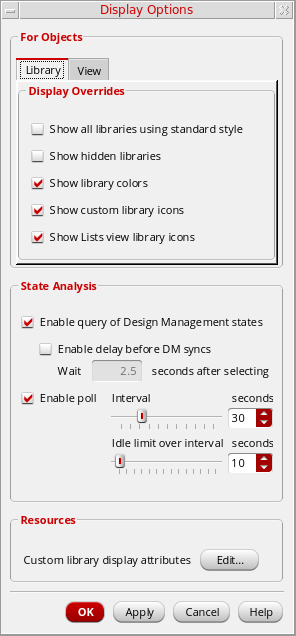
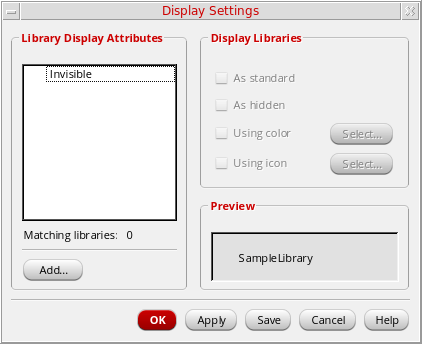

Overriding Customized Library Display Settings
The Display Options form lets you override any of the custom display settings that you have set on libraries. Overrides apply to the current session only.
To override custom library display settings,
-
Select View – Display Options.
The Display Options form appears. - In the Library tab Display Overrides section, select or deselect any of the available options.
-
In the View tab, the only option in the For Objects section is Show extended states. This option allows DM tables to be shown in any viewing mode.
It should be used along with the Enable query of Design Management states option in the Library page. - In the State Analysis section, select or deselect any of the available options.
-
To edit library display settings, in the Custom library display attributes field, click Edit.
The Display Settings form appears.
Related Topics
Return to top